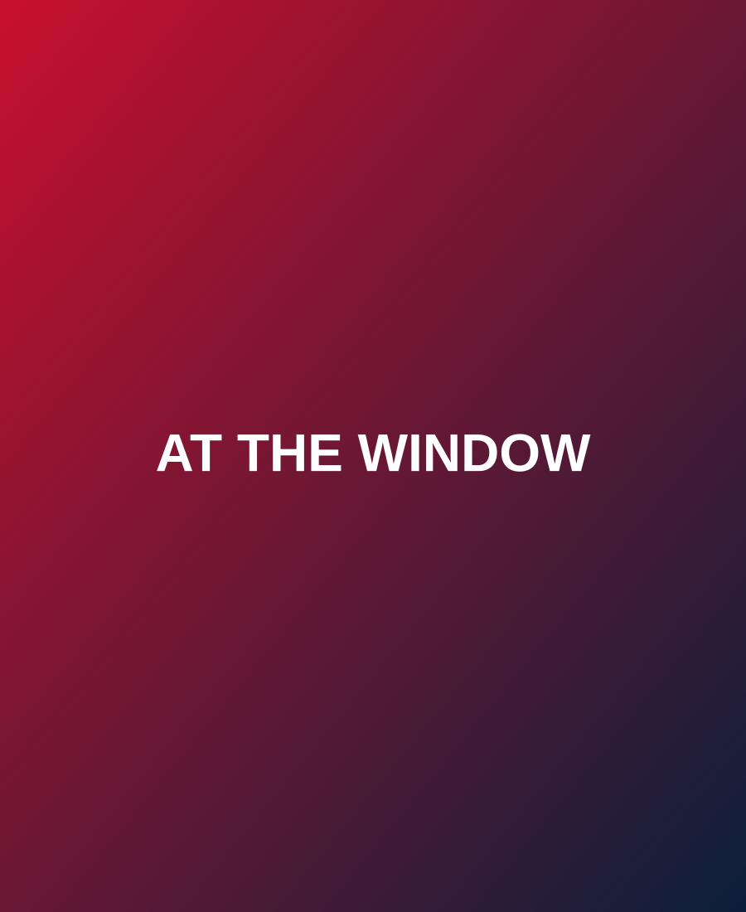

Scott and Trina Legas built their working lives around the concession business back home in Detroit — the kind of work that means long hours, hot grills, and learning to feed a crowd fast without cutting corners. It's also exactly the kind of work that prepares you to run a food stand on your own terms someday.
When they retired, they did what a lot of Michiganders do: headed south for the winters. Fort Myers Beach became their spot — sun, sand, and a slower pace after years of hard work up north.

"We started out for fun. We weren't sure we were going to do it full-time because it's a lot of work." — Trina
What began as a low-key idea — maybe just something to do, something fun for snowbird season — turned into Detroit Dawgs. Scott and Trina set up shop on Estero Blvd and started serving the same Coney dogs they grew up on, made with the same Koegel's and Vienna brands that Michigan expects and nowhere else really delivers.
Word got around fast, especially among the wave of Michigan transplants and seasonal visitors who flood Fort Myers Beach every winter. For them, finding Detroit Dawgs isn't just finding a good hot dog — it's finding a taste of home, a thousand miles south of where they learned to love it.
Like so many businesses on Fort Myers Beach, Detroit Dawgs faced the disruption of Hurricane Ian. The island took a hit, and so did the small businesses that make it what it is. Scott and Trina rebuilt right alongside their neighbors — because that's what you do when a place becomes home, and when the people around you are doing the same.
Today, Detroit Dawgs sits as a permanent fixture on Estero Blvd, across from the Lani Kai Island Resort — proof that the dream survived, and that the island came back stronger with small businesses like this one leading the way.
Every Koegel's dog we serve still ships down from Flint. Every conversation at the window still sounds a little bit like home for the Michiganders who find us. Scott and Trina aren't trying to recreate Detroit — they just never really left it behind.